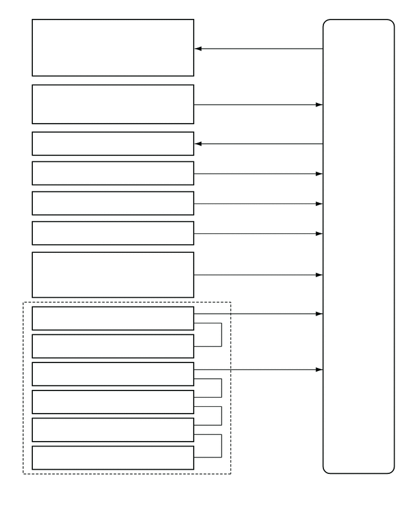

0.75,0.354 2.906,0.656
2.156,0.302
10
false
警告灯总成
0.74,0.635 2.667,0.948
1.927,0.313
10
false
- 动力模式指示灯
0.719,0.938 2.792,1.281
2.073,0.344
10
false
- 侦测声纳指示灯
0.677,1.49 3.104,1.844
2.427,0.354
10
false
后声纳或侦测声纳开关总成
0.927,2.313 3.021,2.646
2.094,0.333
10
false
1 号间隙警告蜂鸣器
1.021,3.344 3.177,3.698
2.156,0.354
10
false
倒车灯开关总成*1
0.719,3.854 3.292,4.188
2.573,0.333
10
false
驻车/空档位置开关总成*2
1.344,5.323 2.458,5.646
1.115,0.323
10
false
右前车角
1.375,5.781 2.51,6.104
1.135,0.323
10
false
左前车角
1.375,6.25 2.448,6.594
1.073,0.344
10
false
右后车角
1.385,7.208 2.385,7.573
1,0.365
10
false
左后中央
1.375,6.74 2.438,7.104
1.063,0.365
10
false
右后中央
1.406,7.698 2.458,8.063
1.052,0.365
10
false
左后车角
1.177,8.115 2.76,8.427
1.583,0.313
10
false
1 号超声波传感器
5.802,3.094 6.49,5.219
0.688,2.125
10
false
间隙警告 ECU 总成
0.188,8.438 2.49,8.802
2.302,0.365
10
false
*1：带手动传动桥的车型
3.146,8.458 6.25,8.833
3.104,0.375
10
false
*2：带无级变速传动桥的车型
1.479,4.719 2.719,4.917
1.24,0.198
10
false
- 尾灯继电器
0.615,4.323 3.292,4.698
2.677,0.375
10
false
仪表板接线盒总成
1.083,2.823 2.969,3.177
1.885,0.354
10
false
组合仪表总成